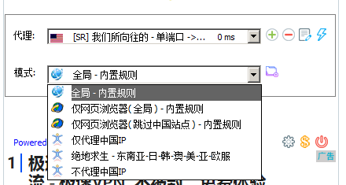

游戏加速
写在前面
本站提供的软件均保证不包含病毒、木马等，但是本站不保证您在其他网站下载的客户端也是安全的，本站客户端使用多个杀毒引擎扫描过，只有一个误报，确认安全；安全性检测报告请点击链接查看。http://r.virscan.org/language/zh-cn/report/ab3e4d00b5cdf9d297d7ea2bf186fb4b

登录
首先打开https://nnss.ooo 或者https://wmsxwd.com
点击登录按钮，输入您的账号和密码进行登录
进入用户中心
TIPS：Windows建议Win7版本及以上（）
软件下载
- 支持软件下载，加速器在Windows下需要dotnetFramework4.0的支持，请下载安装https://download.microsoft.com/download/9/5/A/95A9616B-7A37-4AF6-BC36-D6EA96C8DAAE/dotNetFx40_Full_x86_x64.exe
- 登录后默认进入用户中心，向下滑动，找到【快速添加节点】
点击【SSR】-- 【Windows】 选项卡，切换到Windows标签
- 点击【游戏端】，下载SSTap，你会得到一个安装包
- 解压缩并安装
安装过程中可能会弹出要求安装虚拟网卡的提示，点击【同意】即可
- 安装完毕后你会看到下面的界面，至此安装完毕
软件配置
添加订阅
- 登录后默认进入用户中心，向下滑动，找到【快速添加节点】，点击【SSR】-- 【游戏端】 选项卡，然后复制【单端口节点订阅地址】
- 点击软件主界面的【齿轮】， 选择【SSR订阅】－－【SSR订阅管理】，弹出SSR订阅管理界面
- 将用户中心复制的链接粘贴进去，然后点击添加，然后关闭对话框
- SSTAP会自动更新订阅，更新完毕后你会看到订阅列表

- 选择完成后还不能上网，还需要添加相应的规则，什么是相应规则呢，就是指定什么流量走加速服务，什么流量不走加速服务，请看下面的添加规则
添加规则
- 写在前面，我们的原则是，国内的流量走默认，国外的流量走加速，不然会出现一些奇怪的问题。除非你有特殊要求。举个反例，如果国内的流量也走了加速服务，网易云音乐会默认你人在国外，一些只有国内有版权的歌曲不会让你听的
- SSTap 有一些默认规则，你可以点击模式后面的下拉框看到

- 如果默认的规则符合你的要求，那么请选择默认的规则，否则请往下看，下面是默认规则的解释
- 全局：全部走加速服务，一般这个不要选，要不然会造成一些奇怪的问题
- 仅仅网页浏览器（全局）：网页浏览器全部走加速服务，这个一般也不要选
- 仅仅网页浏览器（跳过中国站点）：网页浏览器访问国外走加速，但是仅仅加速网页浏览器，其他的比如游戏、git客户端、ssh客户端和一些开发工具都是不走加速服务的
- 仅代理中国IP：用于国外回国
- 绝地求生：俗称吃鸡
- 不代理中国IP：就是国外IP走加速，国内IP不走我们的加速服务，这个可以有
添加规则：如果你不了解网络IP的基础知识，建议不要作死
- 点击模式后面的文件夹
在弹出的规则窗口中选择【添加】，弹出添加新规则对话框

规则英文名和中文名随便选，DNS推荐选择自动，动作类型选择代理或者直连，这里选择的代理或者直连作用于你下面的规则列表。规则列表填入你要应用的IP地址，可以填写IP段，然后点击添加即可
- 举个例子，我想要127.0.0.1不走加速服务，可以这样子写
- DNS：自动
- 动作类型：直连
- 规则列表：127.0.0.1
- 选择完规则后点击【连接】即可上网
高级设置
软件右下角有高级设置，比如修改DNS等操作；在软件主界面点击齿轮图标，进入高级设置
下面是设置选项
减少TCP延迟确认
如果当前没问题就不要勾选了，这个目前不太稳定，可以对比一下勾选和不勾选后的游戏ping值自行确认
不转发UDP
建议不要勾选，除非你知道这是做什么的
预选DNS-手动修改DNS
推荐选择谷歌DNS/114DNS，如果你想指定自己的DNS地址，可以选择这个，同时请将【代理DNS服务器】勾选，可以防止国内运营商的DNS污染
开机自启动
字面意思
运行后自动链接
打开加速器后是否自动链接，建议不要选
写在后面
软件成功连接后会藏在右下角，请自己双击回复界面